南通剑驰分公司
租赁厂房1800平方米，办公楼200㎡，拥有设备约800万元，负责长三角项目的开发与生产、维护及售后服务等。
Company Profile
根据公司宣传资料整理企业定位、技术路线、发展历程、研发制造能力和合作方向。
Company Overview
石家庄辰泰环境科技有限公司是一家专注有机溶剂回收治理的高新技术企业。可为不同类型行业提供绿色化工分离技术一一数智化的液相和气相能源耦合利用一体化工艺系统，包括精馏分离、萃取分离绿色能源回收系统，含硫化氢尾气综合治理及硫回收技术，有机尾气能源回收系统，数智化蒸发结晶系统等，并承接EPC总包（技术咨询、工程设计、生产制造、安装调试、培训及售后）一站式服务。公司技术团队不断开发新工艺包的应用，能完美解决各行业所有溶剂的循环回收利用。自主创新的气相与液相分离系统融合设计，实现“废水、废气”都达标排放的双赢效果，能耗节省高达40-70%以上，行业技术国内领先
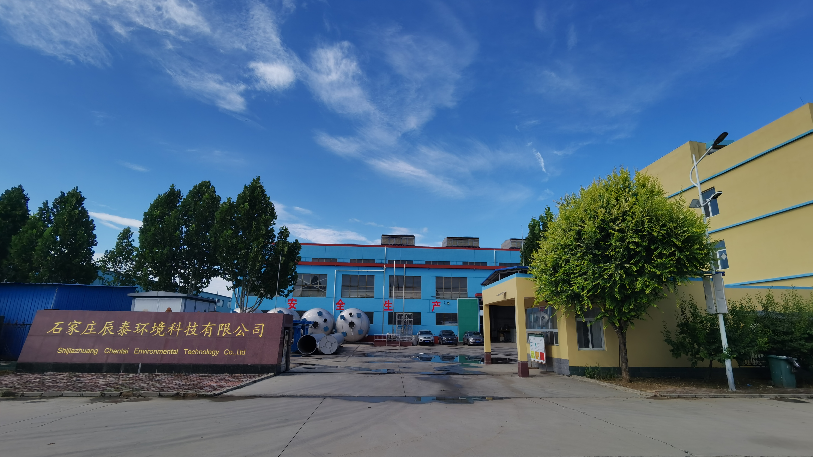
R&D Center
公司拥有化工专业硕士、高级工程师数人，拥有压力容器制造（含安装、改造）许可证，属于国家级高新技术企业、河北省“专精特新”企业、河北省创新型企业。公司设立精馏技术研发中心，是河北省工业企业研发机构B级研发中心，公司组建了“化工节能过程集成与资源利用研究室”，针对多家大中型化工企业，尤其是超高分子量聚乙烯材料、隔膜材料、PE新材料等行业的技术难题，创造了显著的经济效益和社会效益。
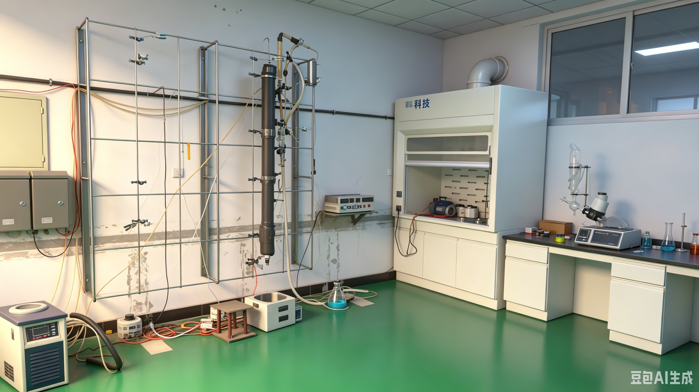
Manufacturing
公司拥有自动化以及智能化高端加工和检测设备，配备先进的激光切割机、自动等离子焊机、管板自动焊机、法兰焊机、氩弧自动焊机以及铣、刨、磨、镗、钻、折弯成型等专业化机械加工设备。拥有各种非标设备制造及装配工艺的高级技师及中级以上技工数十人，公司成立至今，已成功研发设计并建成运行千余套工业化精馏装置。
公司同时还拥有多支专业经验丰富的工程安装队伍，配备多种先进的施工机械长期在项目现场进行设备、管道、电气仪表、钢结构、自控系统等工程安装服务，应用严格、全面的质量管理体系，成功完成了多个重大工程项目，施工地域覆盖全国各省市。

Subsidiaries
围绕华北、长三角、珠三角、海南及海外市场建立协同服务网络，覆盖项目开发、工程设计、生产制造、维护售后和进出口业务。
租赁厂房1800平方米，办公楼200㎡，拥有设备约800万元，负责长三角项目的开发与生产、维护及售后服务等。
主要负责公司萃取精馏系统整体工程的设计、部分生产及售后服务等，拥有设备约1200万，租赁办公楼200平米。
租赁办公楼200平米，库房1000平米，拥有设备约200万，主要负责公司成套技术产品及吸附材料的进出口业务。
租赁厂房1000平方米，办公楼200㎡，拥有设备约500万元，负责珠三角及海南项目的开发与生产、维护及售后服务等。
用于开拓美国市场，承担部分组装、售后服务等工作，租用厂房1000㎡，设备约1000万元。
Quality System
石家庄辰泰环境科技有限公司依托ISO9001 质量管理体系认证，构建覆盖设计研发、材料工艺、生产制造、安装调试、售后服务全链条的闭环质量管理体系，以“技术创新为核心、过程管控为关键、客户满意为目标”，实现产品质量稳定可靠、技术服务专业高效，为客户提供节能降耗与资源循环利用综合解决方案。
(1)_01.png)
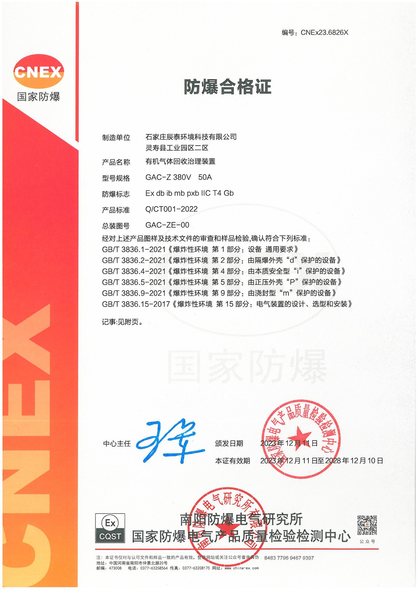

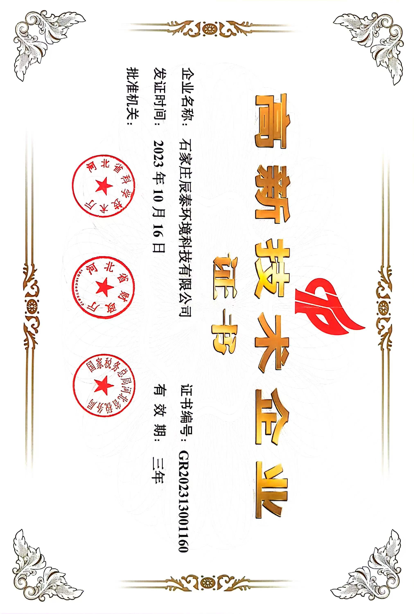

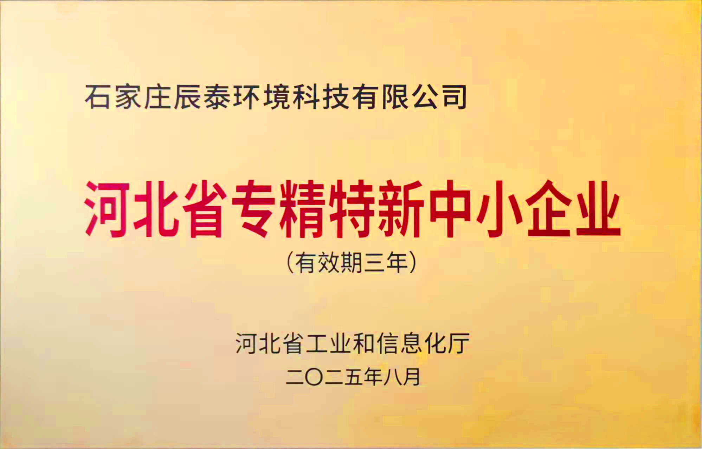

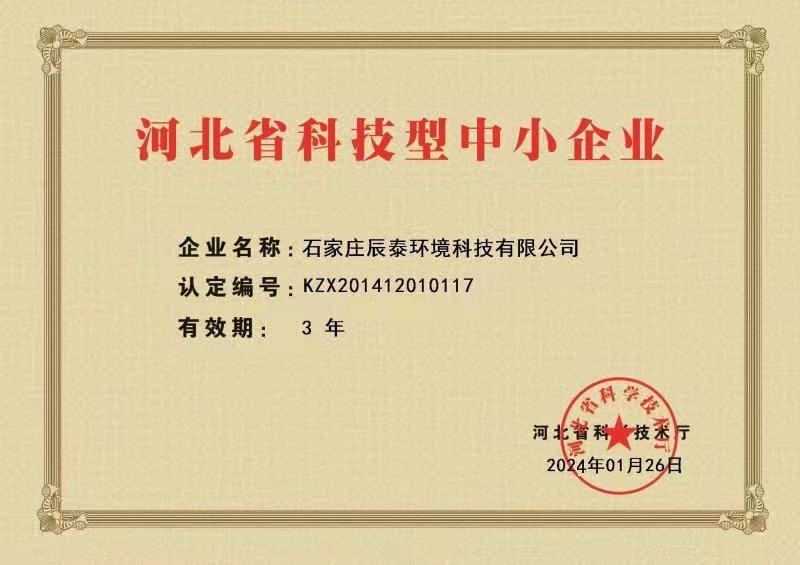

公司建立“市场需求-技术研发-模拟验证-方案定型”研发质量管控流程，组建由高级工程师、行业专家领衔的专业技术团队，每年投入营收8%用于技术创新。对精馏工艺、设备结构进行多维度仿真验证，提前规避设计缺陷。从源头保障工艺适配性与技术可靠性。同时，严格执行研发评审制度，通过方案评审、图纸审核、样机测试三重把关，确保设计输出符合行业标准与客户需求，累计取得多项精馏技术专利，筑牢质量根基。
公司建立供应商准入-评估-动态管理机制，关键零部件供应商需通过资质审核、样品检验、现场考察三重筛选，签订质量协议，明确质量标准与追责机制。工艺管理方面，制定标准化作业指导书（SOP），明确设备焊接、组装、防腐等关键工序参数，严控填料层厚度、塔体垂直度等核心指标。针对有机溶剂分离提纯工艺，优化萃取剂配方与精馏参数，确保溶剂回收率、纯度达标，从材料与工艺双重维度严控质量。
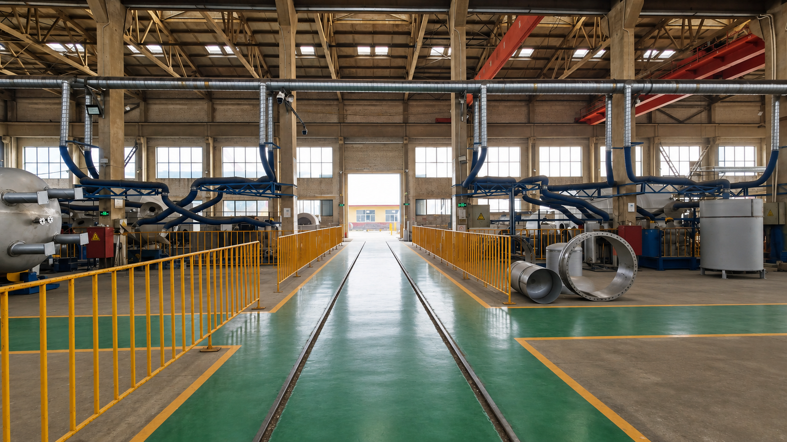


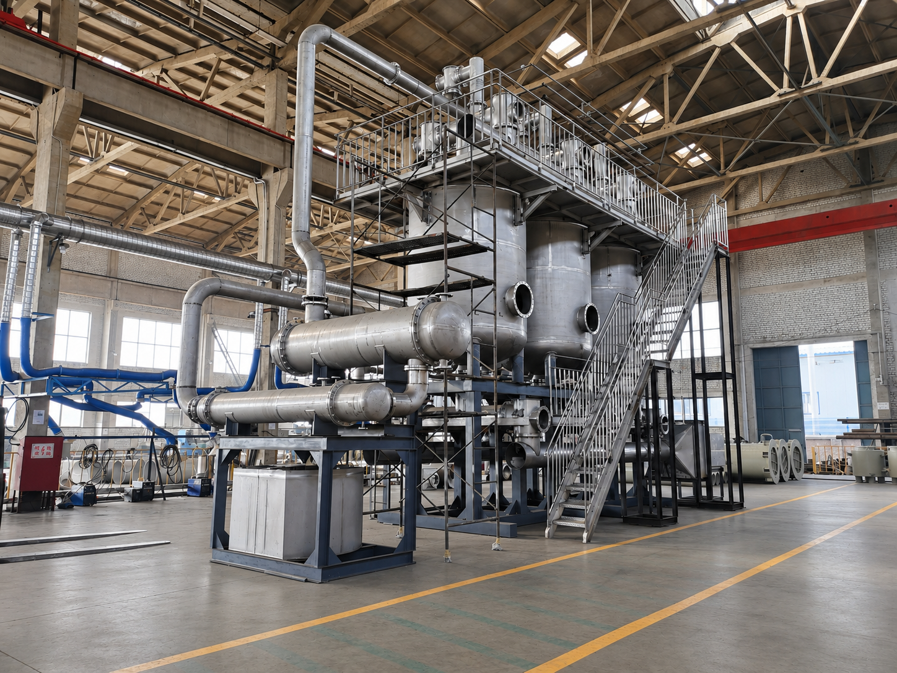
公司配备数控切割机、自动焊接机、无损检测仪等先进设备，实现生产自动化、精细化。生产环节推行“三检制”（自检、互检、专检），每道工序操作人员自检、上下工序互检、质检专员专检，关键工序全程旁站监督。焊接工序执行无损检测，水压试验100%合格，确保设备耐压性与密封性；组装环节严格把控部件精度，杜绝错装、漏装。建立产品全生命周期追溯系统，从原材料批次、生产工序、操作人员到检测数据全程记录，实现质量问题可追溯、可追责。同时，定期开展设备维护校准与员工技能培训，保障生产稳定性，产品良品率稳定在99%以上。
公司制定标准化安装流程，明确现场勘测、基础施工、设备就位、管道连接、系统调试等全流程规范。安装前进行技术交底，核对图纸与现场工况；安装中严格执行安全与质量标准，严控设备水平度、管道密封性，杜绝安装偏差；安装后开展72小时连续试运行，全面检测设备运行参数、溶剂回收效率、废气废水排放指标，确保符合设计要求与环保标准，助力客户快速投产、稳定运行。
公司建立“快速响应-专业服务-定期回访-持续优化”售后服务体系，设立24小时服务热线。设备交付后，提供免费安装指导、技术培训与操作交底，确保客户人员熟练掌握设备操作与维护技能。建立客户档案，定期回访设备运行状况，提供预防性维护建议，及时更换易损部件，延长设备使用寿命。同时，跟踪行业技术动态与客户需求升级，持续迭代精馏技术与服务方案，助力客户实现节能降碳、提质增效，增强核心竞争力。
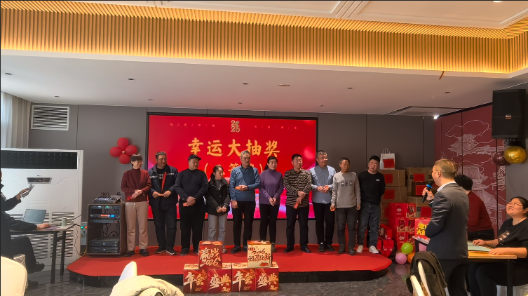
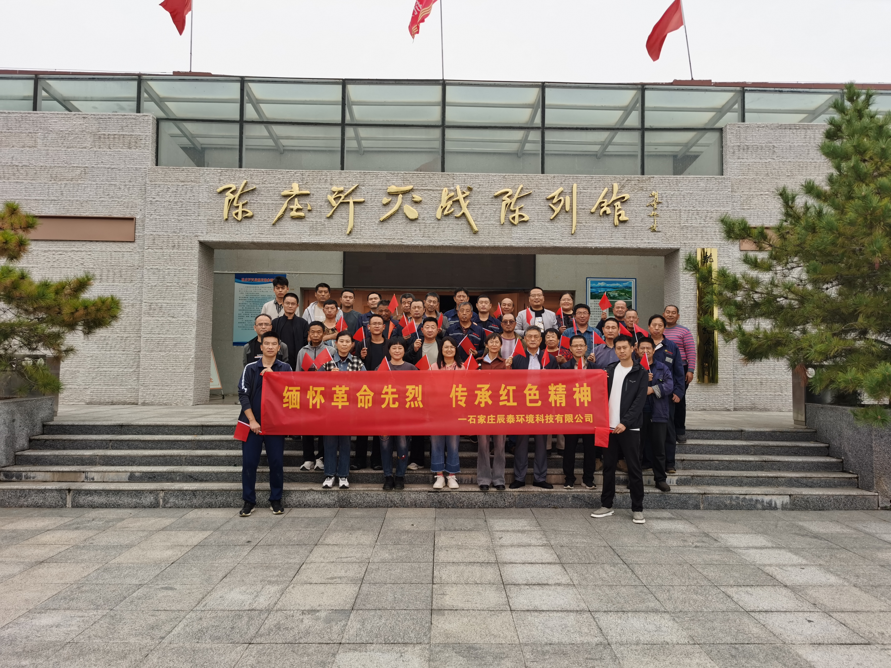


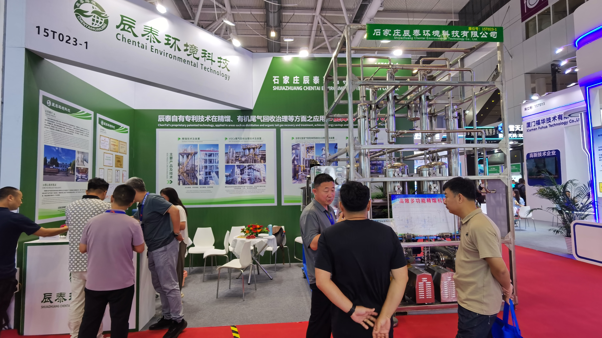

Milestones
公司成立于石家庄市柳董工业区，开始服务国内工业客户。
建立生产基地，具备自主设计和制作能力。
投资购置生产建设用地，筹建综合生产基地。
生产基地主厂房落成并投入使用，销售额突破 3000 万元。
实验中心投入使用，二氯甲烷、白油深度分离中试成功，精馏分离技术完成验证。
与日本大阪燃气建立战略合作关系，取得国家防爆认证资质。
通过高新技术企业资质，获国家科技型中小企业认定。
获专精特新企业认定，取得压力容器相关资质，市级工业研发机构能力持续完善。
乙醚制造系统性整体工程一次开车成功。
高新技术企业和国家级科技型中小企业复审通过，薄膜行业精馏与尾气系统工程落地。
获得市级绿色工厂，取得机电安装贰级、环保工程贰级资质。
Factory & Laboratory
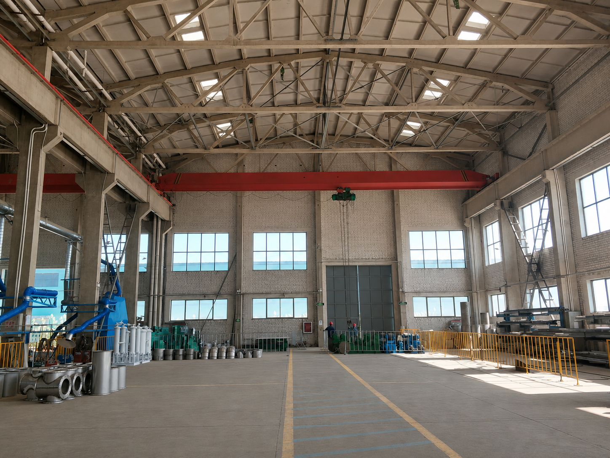
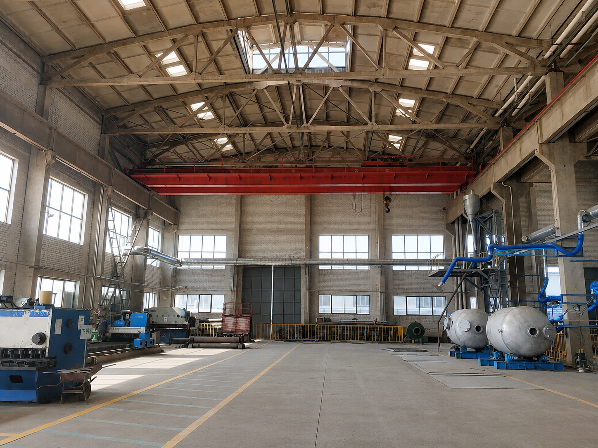
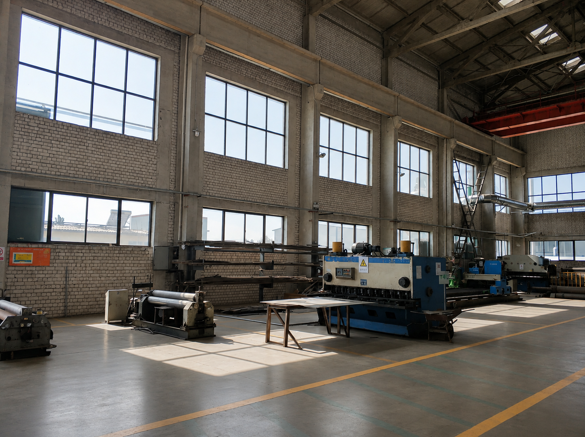
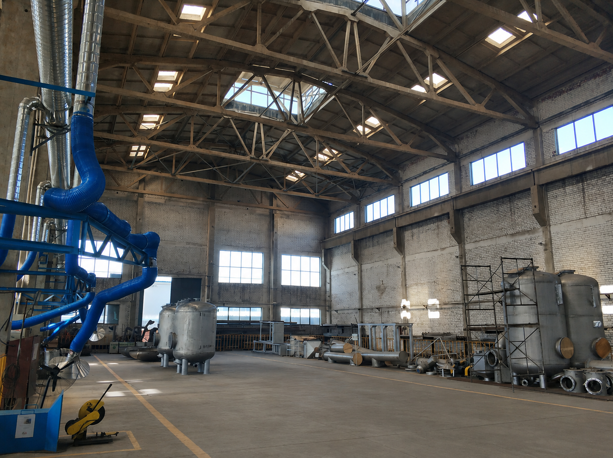